Title: Bovine muscle and adipogenic differentiation with reduced fetal bovine serum
Author: Noorul H. Ali, MS (bioengineering), Tufts University, Medford, MA 02155, United States
Correspondence: Automated
Abstract
Introduction
Results
Discussion
Methods
References
Appendix
Cultured meat holds great promise to decrease greenhouse gas emissions from the traditional livestock agriculture industry. A challenge to the large-scale production of cultured meat is the cost stemming from the expensive reagents used. One such reagent, fetal bovine serum, is extensively used in culturing meat from bovine sources. Here we demonstrate higher quality of fat cells cultivated using reduced serum and serum-free formulations. This report shows potential in decreasing the cost of cultured meat.
Cultured meat, or meat grown in cellular cultures, has the potential to decrease greenhouse gas emissions involved in the production of animal meat from livestock farms [3,4]. Since 2013, when a piece of cultivated meat was displayed publicly for the first time [5], the field of cultured meat has made significant strides toward public acceptance. Cultured meat uses the proliferation and differentiation capacity of stem cells to produce mature, edible tissue [6] for human consumption in vitro. Meat is primarily derived from skeletal tissue. Cultured meat uses the differentiation of bovine satellite muscle cells, which are muscle stem cells, to produce long muscle fibers, also called myotubes or myofibers. Myotubes give meat its fibrous structure. Methods for production of myotubes are well-established in literature [7]. Animal fat is also an important aspect of meat, enhancing its flavor profile, texture, and palatability. It is characterized by its distinctive lipid profile [8] which is difficult to replicate using plant-based fats. Standard methods of production for animal-based fat are unestablished and unoptimized for large volumes, such as in bioreactors. Fetal bovine serum (FBS) is generally used as a source of nutrients and growth factors for the growth of mammalian bovine cells, and helps cells proliferate. Unfortunately, fetal bovine serum is harvested from bovine fetuses taken from pregnant cows during slaughter [9]. Being a biological product consisting of many different components, FBS is uncharacterized and unable to be produced chemically. This makes it expensive, which significantly adds to the production cost of cultured meat.
Here, we demonstrate muscle cell differentiation into myotubes using two protocols: serum starvation, in which no FBS is given to cells as they differentiate; and serum reduction, in which a lower concentration of FBS is given to cells for differentiation. We also demonstrate lipid accumulation in bovine stromal vascular cells using two protocols: DM1, a two-step FBS-containing protocol established in literature [10]; and DM2, a two-step protocol that is serum-free, ascorbic acid, and soybean oil-based in the second step. The protocol DM2 was previously used with ascorbic acid and bovine serum lipids [11]. A serum-free formulation was also used to culture fat-containing cells [12]. We used Intralipid, a soybean oil lipid emulsion, due to a lack of availability of bovine serum lipids, creating a serum-free formulation for lipid accumulation, though we used FBS to induce differentiation as well.
This work, performed as part of the BME 174: cellular agriculture laboratory course at Tufts University in Spring 2024, demonstrates reduced usage of FBS to induce differentiation in muscle cells and fat-storage adipogenic cells. Cells under the serum-free protocol demonstrated higher fat content than cells under the FBS protocol.
Successful muscle and fat cell proliferation
Bovine satellite cells (BSCs) and stromal vascular cells (SVCs) were isolated according to the isolation protocol described in the Methods section. We seeded a 12-well plate with muscle cells at a density of 1,400/cm 2 and fat cells at a density of 3,700/cm2. The cells were fed with growth medium every 2-3 days for one week for proliferation. Low levels of proliferation and no differentiation were observed in both types of cells (figure 1).
Differentiation of bovine satellite muscle cells into muscle fibers
After proliferation of muscle cells in the 12-well plate, we performed two differentiation protocols on muscle cells to differentiate them into myofibers. Under the serum starvation protocol, cells were starved of serum for one week. Under the serum reduction protocol, cells were fed with a lower concentration (2%) of fetal bovine serum. Both protocols are well-established in literature to differentiate bovine satellite muscle cells [7]. We observed significant myofiber structure after 1 week with LADD staining under both protocols. Cells under the serum starvation protocol had slightly higher density of myofibers than cells under the serum reduction protocol (figure 2). Cells were also cryopreserved before differentiation described in the Methods section.
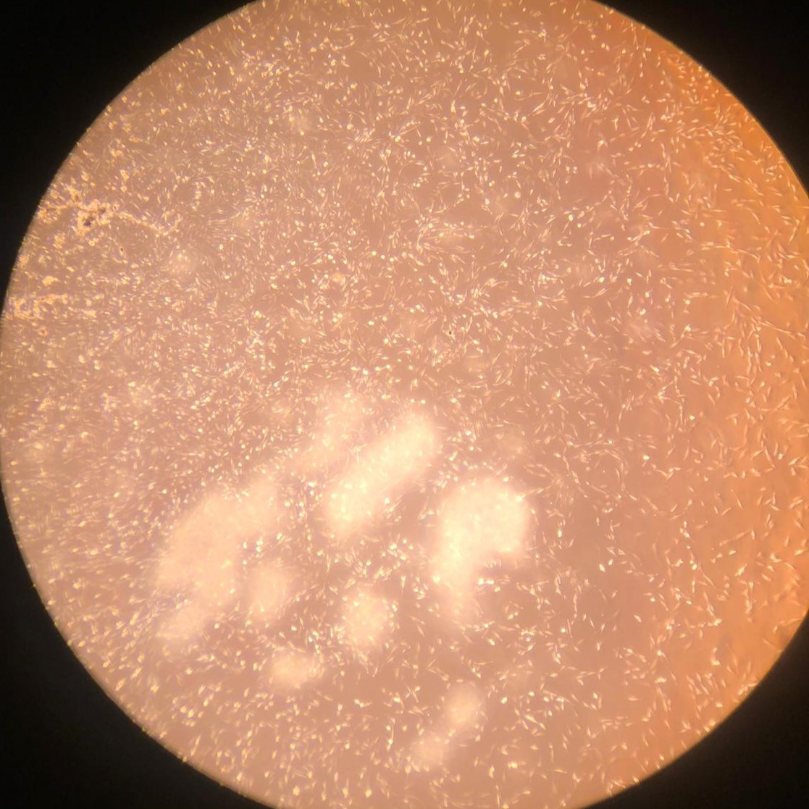
1.(a) Proliferating BSCs on day 1
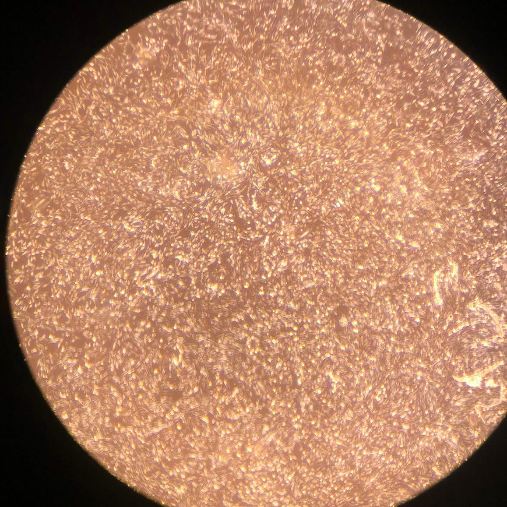
1.(b) Proliferating BSCs on day 3
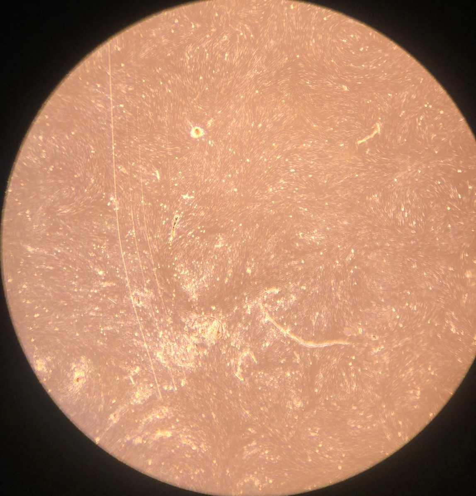
1.(c) Proliferating SVCs on day 1
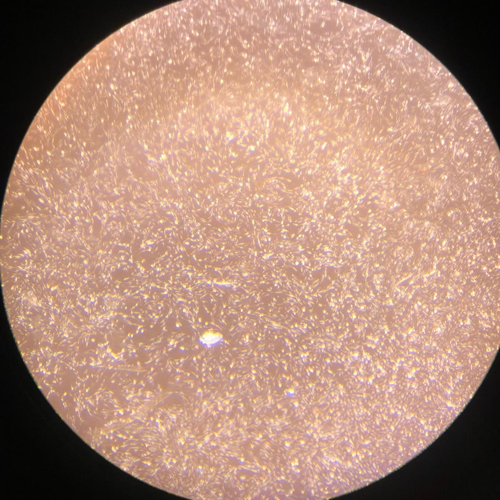
1.(d) Proliferating SVCs on day 3
Figure 1: Proliferating muscle and stromal cells in growth medium. No differentiation is observed. Higher cell counts can be seen on day 3.
Accumulation of lipids in bovine stromal vascular cells
After proliferation of fat cells in the 12-well plate, we performed two differentiation protocols on bovine stromal vascular cells to initiate accumulation of lipid particles within cells. A growth medium control was also established. Lipid accumulation was verified and quantitatively compared between control and both protocols using an absorbance-based assay described in the Methods section. Compared to control, cells under both protocols demonstrated lipid accumulation. Cells under the second protocol (DM2) had a significantly higher lipid accumulation than cells under the first protocol (DM1). Quantitatively, cells under DM2 had 148% higher lipid content than cells under DM1 (figure 3).
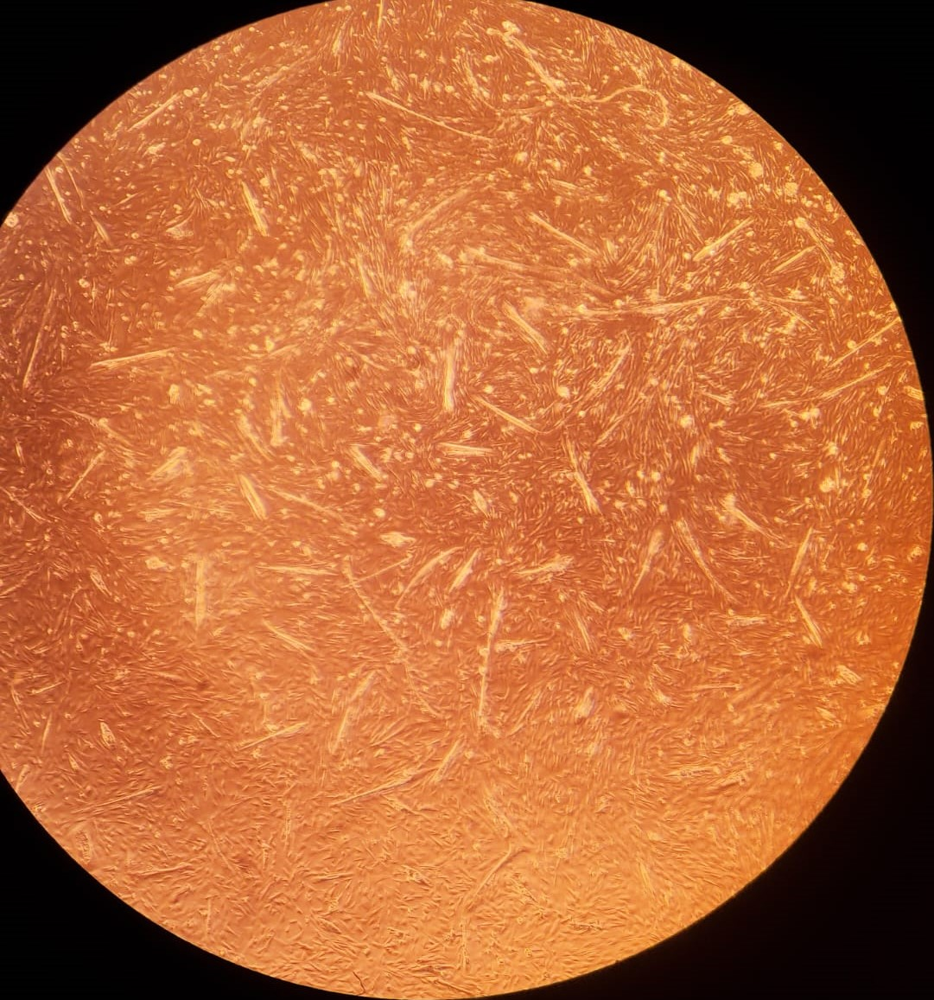
2.(a) Differentiating BSCs on day 1
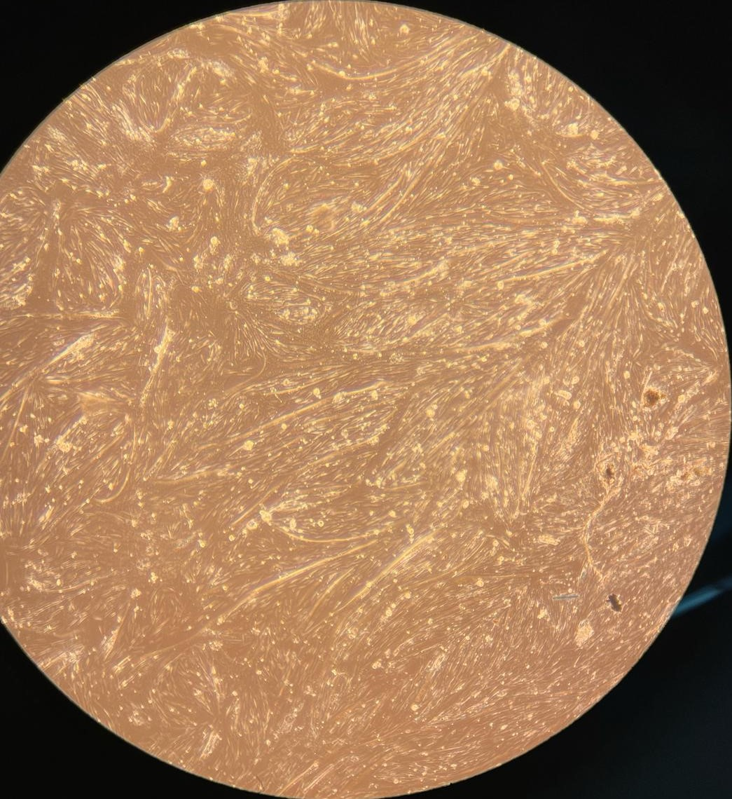
2.(b) Differentiating BSCs on day 4
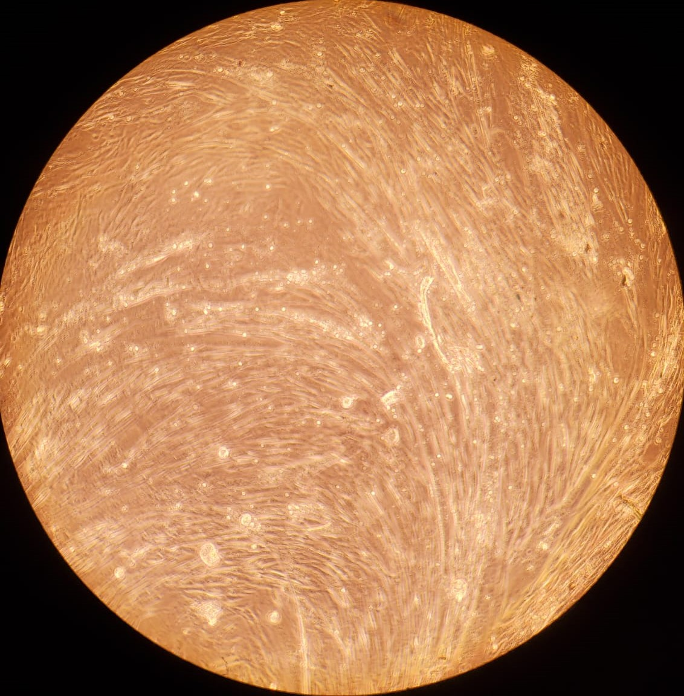
2.(c) Differentiating BSCs on day 7
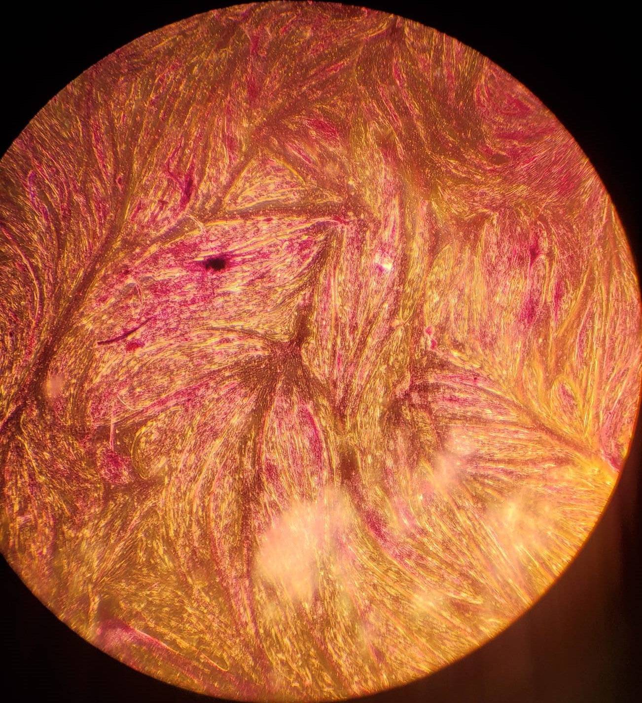
2.(d) Myotubes formed under serum starvation
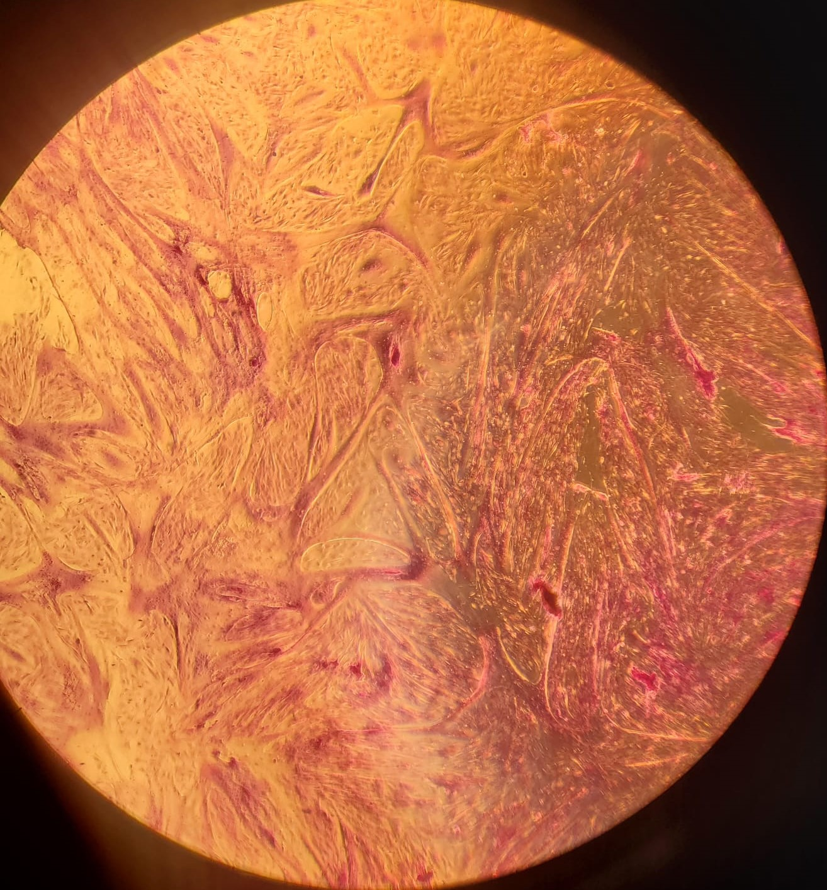
2.(e) Myotubes formed under 2% FBS
Figure 2: (a - c): Differentiating bovine satellite cells (BSCs). Fiber formation can be seen. (d - e): LADD stained myotubes from differentiated BSCs. Higher density of myotubes are observed under serum starvation protocol compared to serum reduction (2% FBS) protocol.
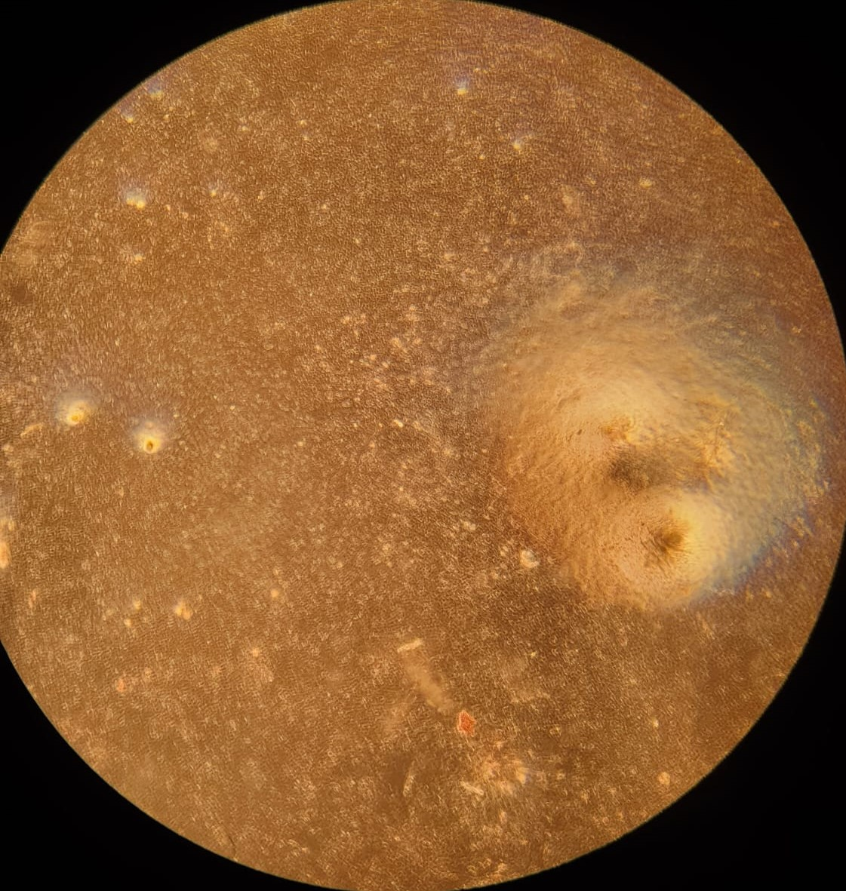
3.(a) Oil Red O stained SVCs
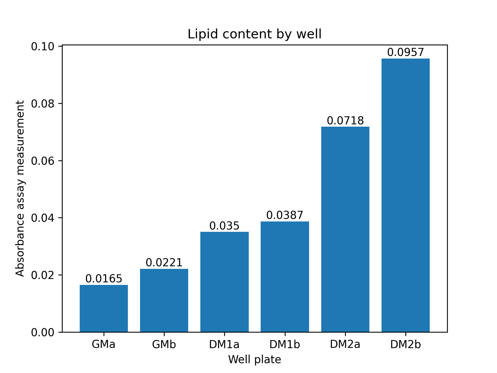
3.(b) Lipid content in SVCs
Figure 3: (a): Oil Red O stained stromal vascular cells (SVCs) under DM2 (reduced serum and serum-free) protocol. Few red spots are seen indicating lipid accumulation. (b): Absorbance assay measurement by well. Absorbance measured at 515nm is a metric of lipid content in cells. ’a’ and ’b’ refer to two separate wells with the same medium. GM: growth medium control; DM1: conventional adipogenic differentiation and accumulation media; DM2: reduced serum differentiation medium, and ascorbic acid and Intralipid-based accumulation medium
Primary cell isolation solution is the media in which cells are cultured. DPBS is a buffer solution used to maintain cell culture media in the physiological pH range of 7.0 to 7.6. Antibiotic-Antimycotic (Anti-Anti) prevents bacterial and fungal contamination by containing antibiotics. Since the primary application of cell culture in this paper is cultured meat, research on induced antibiotic resistance in humans from cultured meat should be done. Proliferation media is a solution that provides necessary nutrients and growth factors to promote mammalian cell growth. Cells are passaged to prevent confluence. At confluence, when 90+% of the surface area of a vessel is covered with cells, contact inhibition and cellular signals can initiate differentiation in muscle cells. Cell passaging (or subculturing) prevents this by seeding cells at a lower density. Growth medium contains fetal bovine serum (FBS) which is harvested from bovine fetuses taken from pregnant cows during slaughter [9]. FBS is a biological product not fully characterized and contains growth factors and nutrients for cell proliferation. A significant area of research in cultured meat is replacement of FBS. Our DM2-accumulation medium replaced FBS with ascorbic acid and Intralipid, and demonstrated viable lipid accumulation in stromal cells, a promising direction for further research and optimization.
Muscle differentiation is straightforward and established in literature. Starvation and reduction of fetal bovine serum, which contains growth factors, are the two strategies we employed to initiate differentiation. When cells stop receiving signals to grow, and suffer a nutrient shortage, they stop proliferating and differentiate into myotubes. Culturing adipose cells is more complicated and less established in literature. Adipose cells contain lipids within them, which contributes to the fatty flavor and texture of meat. We used two strategies to induce lipid accumulation in stromal vascular cells, supplemented with a negative control fed with growth medium. Each strategy had an induction phase, in which cells differentiated into adipogenic cells, and an accumulation phase, in which cells accumulated lipids inside them from extracellular lipids given in the medium. The first strategy (DM1) is our positive control and generally given to induce adipogenic differentiation and lipid accumulation. The second strategy we employed (DM2) had lower concentrations of components found in DM1-induction medium, and no FBS in the accumulation medium, based on previous literature [11,12]. The accumulation medium in DM2 was serum-free and based on ascorbic acid and Intralipid, a soybean oil medical lipid emulsion. Our demonstration of higher lipid content in DM2 cells compared to DM1 and control, shows promise. Lipid content in cells, mostly unobservable under a light microscope after Oil Red O staining, was demonstrated by an absorbance assay. A higher lipid content in cells equates to higher quality of adipogenic cells. Further downstream usage, such as in bioprinting, of higher quality cells is preferred due to better flavor and texture. This study demonstrates an alternative method to produce muscle and adipose cells using reduced levels of fetal bovine serum and other components, which constitute a major portion of the high cost of cultured meat.
Media preparation [14]
100mL of primary cell isolation solution was prepared by mixing 90mL of Dulbecco’s phosphate-buffered saline (DPBS) and 10mL of 100X Antibiotic/Antimyotic. Growth medium was prepared by mixing 517.5mL of Dulbecco’s Modified Eagle Medium (DMEM) (Gibco DMEM(1X) + GlutaMAX, 10569-010), 57.5mL of 10% fetal bovine serum (FBS), 1.15mL of 500X Primocin, and 11.5 µL of 2ng/mL fibroblast growth factor beta (FGFb). Two different media were used for accumulation of lipids in bovine stromal fat cells. DM1-induction media (DM1-ind), conventionally used, contains DMEM, 10% FBS, 10µg/ml insulin, 1 µM dexamethasone, 0.5mM isobutylmethylxantine (IBMX), and 2 µM rosiglitazone. DM-1 accumulation media (DM1-acc), used after DM1-ind, contains DMEM, 10% FBS and insulin. Since bovine serum lipids aren’t readily available, Intralipid, a soybean oil based medical lipid emulsion, was also used. DM2-induction media (DM2-ind) consists of DMEM, 10% FBS, 10 µM biotin, 5.67 µM pantothenate, 3 µg/mL insulin, 0.3 µM dexamethasone, 0.1mM IBMX, 10 µM rosiglitazone. DM2-accumulation media (DM2-acc) contains DMEM, 3 µg/mL insulin, 10 µM biotin, 113 µM ascorbic acid, and 500 µg/mL Intralipid. All media were stored in a refrigerator at 4°C.
Fresh bovine skeletal muscle and fat samples were obtained from the posterior region of a young calf and an older cow respectively from a commercial slaughter and dairy farm and stored in primary cell isolation solution. Muscle was minced and dissociated with 2mL of 2% collagenase (1 h, 37 °C). Muscle cell slurries were filtered successively through 70 µm and 40µm cell strainers. Fat cell slurries were filtered successively through 750 µm, 300 µm, and 70 µm cell strainers. Both wereresuspended in growth medium after centrifugation (400RPM, 10 minutes) prior to counting with a hemocytometer. Muscle cells were seeded at a density of 91,000/cm2 in a T-25 flask. Fat cells were seeded at a density of 29,500/cm2 in a T-25 flask. Muscle cells were left undisturbed in the incubator for 6 days (37 °C, 5% CO2) to proliferate. Fat cells were fed every 2 days using prepared growth medium to proliferate.
Seeding cells on a 12-well plate [19]
After one week of bovine satellite muscle and stromal vascular (fat) proliferation, cells in their flasks were trypsinized with 1mL of 0.25% trypsin. Cells were counted with a hemocytometer after centrifugation (400RPM, 10 minutes) and resuspension in growth medium for passaging. 4 wells of a 12-well plate were seeded with muscle cells at a density of 1,400/cm2. 6 wells were seeded with stromal vascular (fat) cells. After plating, cells in all wells were fed with 1mL of prepared growth medium every two days for one week before initiation of differentiation.
Differentiation of muscle cells and lipid accumulation in stromal cells [17]
Two differentiation strategies were taken for bovine satellite muscle cells: serum starvation, where two muscle cell wells were not fed for one week; and serum reduction, in which two muscle cell wells were fed with 1mL of 2% FBS once every 3 days for one week. Two lipid accumulation protocols were used for fat cells, alongside a growth medium (GM) control. In GM control, two wells with stromal vascular cells were fed with 1mL of growth medium every 2 days. The first protocol, termed DM1, had two phases: DM1-induction, in which stromal cells in two wells were fed with 1mL of DM1-ind medium once; and DM1-accumulation, in which both wells were fed with 1mL of DM1-acc medium every two days for one week. The second protocol, termed DM2, also had two phases: DM2-induction, in which stromal cells in two wells were fed with 1mL of DM2-ind medium once; and DM2-accumulation, in which both wells were fed with 1mL of DM2-acc medium every two days for one week (figure). After each feeding, the 12-well cell plate was kept in the incubator (37 °C, 5% CO2).
Verification of muscle and fat content in differentiated cells [18]
Muscle cells in each well were fixed with 500 µL of 70% ethanol, washing with DPBS before and after. 450 µL of LADD Multiple Stain was added to each well (60 seconds). Cells were washed with distilled water till it ran clear. Cells were visualized under a light microscope for verification of myoblast fusion13, i.e. presence of myofibers/myotubes. Stromal cells (fat) were fixed with 4% formaldehyde and washed with DPBS before and after. 1mL of 100% propylene glycol was added to each of the 6 fat cell wells (5 minutes) to coat the cells. 1mL of Oil Red O solution (60 °C) was added to each fat well (7 minutes). 85% propylene glycol was added to each fat well (1 minute). Cells were washed with distilled water twice and imaged under a light microscope. After imaging, the well-plate was taken to a fume hood. 500 µL of isopropanol was added to each of the 6 fat wells to elute the Oil Red O stain. Isopropanol supernatant from each well was transferred to 6 wells in a 96-well plate. Two control wells in the 96-well plate were also filled with isopropanol. Absorbance at 515nm wavelength in the 96-well plate was measured using a plate reader.
Acknowledgements
I thank Jake Marko, Kirsten Trinidad, and Emily Lew for their guidance as instructors in the BME 174: cellular agriculture laboratory course at Tufts University (Spring 2024). I also thank the teaching assistant Maxwell Levene for his help throughout the laboratory sessions. Finally, I thank Oluyemisi Obi, Ruben Torres, and Mason Villegas for collaborating to run these experiments as a team.
References
[1]: Ali, N.H. Lab notebook for BME 174: cellular agriculture laboratory course. Tufts University. Spring 2024.
[2]: Marko, J.A., Lew E., Trinidad K. Protocols and slides for BME 174: cellular agriculture laboratory course. Tufts University. Spring 2024.
[3]: Bhat, Z.F.; Kumar, S.; Bhat, H.F. In vitro meat: A future animal-free harvest. Crit. Rev. Food Sci. Nutr. 2017, 57, 782–789. 2.
[4]: Tuomisto, H.L.; Teixeira De Mattos, M.J. Environmental impacts of cultured meat production. Environ. Sci. Technol. 2011, 45, 6117–6123.
[5]: Our Story—Mosa Meat. Available online: Link
[6]: Dohmen, R.G.J., Hubalek, S., Melke, J. et al. Muscle-derived fibro-adipogenic progenitor cells for production of cultured bovine adipose tissue. npj Sci Food 6, 6 (2022). Link
[7]: Stout, A. J., Mirliani, A. B., Rittenberg, M. L., Shub, M., White, E. C., Yuen, J. S. K., Kaplan, D. L. (2022). Simple and effective serum-free medium for sustained expansion of bovine satellite cells for cell cultured meat. Communications Biology, 5(1). Link
[8]: Hwang, Y .-H. Joo, S.-T. Fatty acid profiles of ten muscles from high and low marbled (Quality Grade 1++ and 2) Hanwoo Steers. Korean J. Food Sci. Anim. Resour. 36, 679–688 (2016).
[9]: Jochems CE, van der Valk JB, Stafleu FR, Baumans V . The use of fetal bovine serum: ethical or scientific problem? Altern Lab Anim. 2002 Mar-Apr;30(2):219-27. PMID: 11971757. Link
[10]: John Se Kit Yuen Jr, Michael K Saad, Ning Xiang, Brigid M Barrick, Hailey DiCindio, Chunmei Li, Sabrina W Zhang, Miriam Rittenberg, Emily T Lew, Kevin Lin Zhang, Glenn Leung, Jaymie A Pietropinto, David L Kaplan (2023) Aggregating in vitro-grown adipocytes to produce macroscale cell-cultured fat tissue with tunable lipid compositions for food applications. eLife 12:e82120. Link
[11]: Sandra Jurek, Mansur A. Sandhu, Susanne Trappe, M. Carmen Bermúdez-Peña, Martin Kolisek, Gerhard Sponder, Jörg R. Aschenbach. (2020). Optimizing adipogenic transdifferentiation of bovine mesenchymal stem cells: a prominent role of ascorbic acid in FABP4 induction. Adipocyte, 9:1, 35-50. Link
[12]: Rada Miti´c, Federica Cantoni, Christoph S. Börlin, Mark J. Post, Laura Jackisch. (2023). A simplified and defined serum-free medium for cultivating fat across species. iScience, V olume 26, Issue 1. Link
[13]: McColl R, Nkosi M, Snyman C, Niesler C. Analysis and quantification of in vitro myoblast fusion using the LADD Multiple Stain. Biotechniques. 2016 Dec 1;61(6):323-326. PMID: 27938324. Link
[14]: Ali N.H., Marko J, Trinidad K, Lew E. Mammalian cell culture media preparation. Protocol Dex. Link
[15]: Ali N.H., Marko J, Trinidad K, Lew E. Bovine satellite cell (muscle) isolation. Protocol Dex. Link
[16]: Ali N.H., Marko J, Trinidad K, Lew E. Bovine stromal vascular cell (fat) isolation. Protocol Dex. Link
[17]: Ali N.H., Marko J, Trinidad K, Lew E. Bovine fat and muscle differentiation. Protocol Dex. Link
[18]: Ali N.H., Marko J, Trinidad K, Lew E. Verification of adipogenicity and myogenicity. Protocol Dex. Link
[19]: Ali N.H., Marko J, Trinidad K, Lew E. Cell passage and sub culture. Protocol Dex. Link